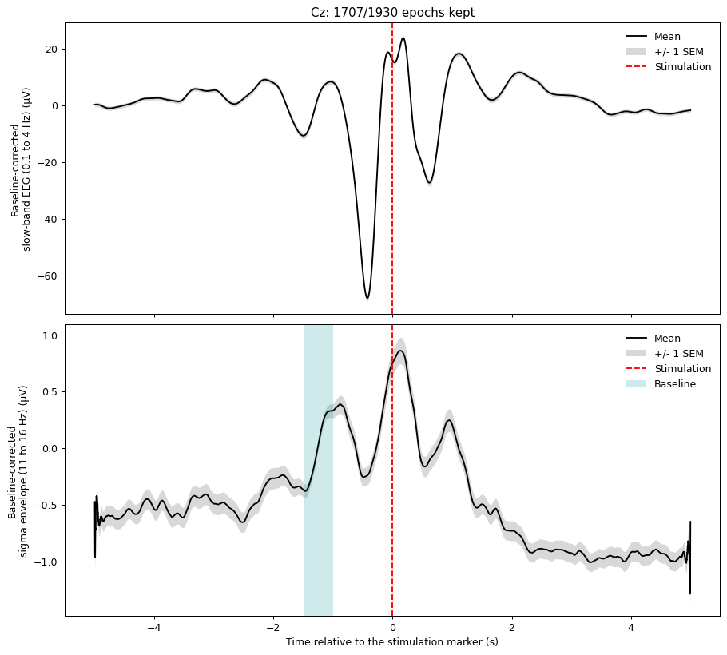

Responses to the stimulation
Cut a window of EEG around every sound the Portiloop sent, clean and average these windows, and read the result: the slow wave the device detected, the up-state it aimed at, the response that follows, and the spindle-band activity. Then see why a single stimulation night cannot, on its own, tell you what the sounds did.
In this tutorial you will
- Understand what an epoch is and how
portiloop_analysiscuts, filters and checks it - Know why the filters are zero-phase, why each uninterrupted stretch is filtered on its own, and why edges are discarded
- Compute the slow-band response and the sigma (spindle-band) envelope, with their baselines
- Apply the rejection rules and read their counts on the tutorial night
- Interpret the average and its SEM, and know which parts reflect the detection (selection) rather than a response
- Run
slow_and_sigma_response.ipynbon a night of your own
From markers to epochs
During the night the Portiloop writes a 1 in the stimulation column of the CSV at the sample where it decided to play a sound (in Cond A, where it would have played one; see tutorial 05). On the tutorial night there are 1,930 such markers, from minute 30.9 to minute 373.0. An epoch is a window of signal centred on one marker: by default from 5 s before to 5 s after it, so 2,501 samples at 250 Hz. Averaging many epochs aligned on their markers cancels the activity that is not time-locked to the markers and keeps what is.
The analysis uses one channel, Cz, which is also the detection channel of the tutorial night (detection channel 6 in the metadata; Cz is on raw_ch6 in the default montage). Loading it with load_recording:
from portiloop_analysis import load_recording
recording = load_recording("clas-tutorial_2026-11-15_04-01-29_CONDB/clas-tutorial_2026-11-15_04-01-29_CONDB.csv",
channel="Cz", montage="default")
print(recording.summary().to_string())clas-tutorial_2026-11-15_04-01-29_CONDB.csv: 6654051 samples (443.6 min), 1930 stimulations, no _leadoff.json
channel Cz
files 1
duration (h, with gaps) 7.393
missing samples 0
samples with electrode off 0
stimulation markers 1930"no _leadoff.json": the lead-off file of this night was not retrieved from the device, so the analysis does not know that the electrodes came off near minute 372.8 (tutorial 06). When the file exists, load_recording sets the samples recorded with the electrode, the reference or the bias off to missing (NaN) and flags them in recording.leadoff.
Filtering offline
The Portiloop filters the signal in real time with causal filters: they only use past samples, so they delay the signal (tutorial 08). Offline, we have the whole night, so the analysis uses zero-phase filters: scipy.signal.sosfiltfilt runs a Butterworth filter forwards, then backwards, which cancels the delay. The module says so in its first lines:
portiloop_analysis/preprocessing.py (docstring)"All filters here are zero-phase (applied forwards and backwards with scipy.signal.sosfiltfilt): unlike the causal filters of the Portiloop itself, they do not delay the signal, which is what an offline analysis of event-locked responses needs."
For every band, filter_band does the same steps on every uninterrupted stretch of signal:
notch = butter(1, [notch_hz - 0.5, notch_hz + 0.5], btype="bandstop", fs=fs, output="sos")
bandpass = butter(order, [low, high], btype="bandpass", fs=fs, output="sos")
edge = round(edge_s * fs)
filtered = np.full(len(eeg), np.nan)
for start, stop in zip(*continuous_segments(np.isfinite(eeg), breaks)):
if stop - start <= 2 * edge:
continue
segment = eeg[start:stop] - eeg[start:stop].mean()
if notch is not None:
segment = sosfiltfilt(notch, segment)
segment = sosfiltfilt(bandpass, segment)
filtered[start + edge:stop - edge] = segment[edge:len(segment) - edge]
return filtered- Mean removal, notch, band-pass. The stretch's mean is removed, a notch (a first-order Butterworth band-stop, mains frequency ± 0.5 Hz) removes the mains interference, then a Butterworth band-pass (
order=4, applied forwards and backwards) keeps the band. The notch frequency comes fromnotch_hz: 60 Hz for the tutorial night, whose metadata says"power_line": 60. The lab's protocol uses 50 Hz; setnotch_hzto the value in your recording's metadata (the notebook warns you if they differ). - Each uninterrupted stretch on its own. A recording can have holes: a gap between two files of the same night, or samples set to missing because an electrode was off. A filter that runs across a hole either fails (NaN spreads through the whole output) or smears the jump at the edges of the hole into the signal on both sides. So the code finds the runs of valid samples (
continuous_segments, which also splits at file boundaries) and filters each one separately. - Edges. A filter applied to a finite stretch has no signal before the first sample or after the last one, so the first and last seconds are distorted (the filter "rings" there). The code discards
edge_s = 10s at both ends of every stretch (set to NaN). An epoch that touches these discarded samples is rejected asmissing.
The older scripts bridged holes by linear interpolation before filtering; the README of the package explains why that was dropped: "missing data are no longer bridged by linear interpolation before filtering: each stretch of signal is filtered on its own, and epochs touching missing data are rejected".
The slow band and the sigma envelope
Three filtered versions of Cz are computed (filter_recording):
| Name | Band | Used for |
|---|---|---|
slow | 0.1 to 4 Hz | Slow oscillations and the slow waves evoked by sounds |
sigma | 11 to 16 Hz, then its amplitude envelope | Spindle-band activity |
broadband | 0.1 to 20 Hz | Artifact rejection (and the broadband ERP) |
The sigma band oscillates at 11 to 16 Hz; averaging it directly would cancel out, because spindle cycles are not phase-locked to the marker. What we want is its amplitude: how strong the spindle-band activity is at each moment. The Hilbert transform provides it: it turns a narrow-band signal into an "analytic signal" whose modulus is the instantaneous amplitude (the envelope that touches the peaks of the oscillation) and whose angle is the instantaneous phase. The code computes it on each kept epoch:
status[int(event)] = "kept"
pieces["sigma"] = np.abs(hilbert(pieces["sigma"])) # amplitude envelope of the sigma bandThe Hilbert transform of a finite epoch has its own edge effect: the envelope is unreliable in the first and last tens of milliseconds of the epoch. You can see it as the vertical spikes at -5 s and +5 s in the figure below. Do not measure anything at the very edges of an epoch.
Baselines
A baseline is a value subtracted from each epoch so that epochs start from a common level. The defaults (EpochSettings) differ per band:
slow_baseline = "epoch": the mean of the whole epoch (-5 to +5 s) is subtracted. The slow band already has no DC component (the band-pass starts at 0.1 Hz), so this only removes slow drifts.sigma_baseline = (-1.5, -1.0): the mean of the envelope between 1.5 and 1.0 s before the marker is subtracted, so the sigma curve shows the change relative to that window. On the tutorial night the envelope itself is about 3.8 µV (mean of the kept epochs from -3 to -2 s, our computation), so a change of 0.86 µV is a change of about 23 %.broadband_baseline = None.
A baseline is only neutral if nothing systematic happens in its window. With markers placed on slow oscillations, the window -1.5 to -1.0 s often falls on the previous cycle of the oscillation, and spindles are grouped by slow oscillations [3]. On the tutorial night the sigma envelope has a local maximum at -0.88 s, right next to the default window. The epoch explorer below lets you move the window and see what changes.
Rejection rules
For every marker, event_locked_responses checks the epoch in this order and stops at the first reason it finds. The reason is stored in responses.events["status"]:
if start < 0 or stop > recording.n_samples:
reason = "edge" # the epoch reaches outside the recording
elif recording.leadoff[start:stop].any():
reason = "leadoff" # electrode, reference or bias off
elif jumps[start + 1:stop].any():
reason = "jump" # abrupt change of the raw signal
else:
pieces = {band: filtered[band][start:stop] for band in BANDS}
if not all(np.isfinite(piece).all() for piece in pieces.values()):
reason = "missing" # missing data, or too close to a gap or to the start/end of a file
elif settings.max_ptp_uv is not None and np.ptp(pieces["broadband"]) > settings.max_ptp_uv:
reason = "artifact"| Status | Rule (default value) | Tutorial night |
|---|---|---|
edge | The epoch reaches outside the recording | 0 |
leadoff | Overlaps a period with the electrode, reference or bias off (from _leadoff.json) | 0 (no lead-off file) |
jump | Two consecutive raw samples differ by more than jump_limit_uv (1000 µV) | 50 |
missing | Contains missing samples, or samples within edge_s (10 s) of a gap or of the start or end of a file | 0 |
artifact | Broadband (0.1 to 20 Hz) peak-to-peak amplitude above max_ptp_uv (350 µV) | 173 |
kept | 1,707 |
Where are the rejected epochs? Most are in the second half of the night: the median minute of the 173 artifact epochs is 306.5, and the 50 jump epochs fall in bursts (for example 10 between minutes 283.8 and 284.1, and 6 around minute 306.3). The last two stimulations of the night, at minute 373.0, are rejected as jump: they are the moment the electrodes came off. Without the lead-off file, the analysis would accept epochs recorded with a detached electrode if they passed the other checks; here none do, because the device itself stopped stimulating at minute 373.4 (tutorial 04).
The same epochs are kept in every band ("The same epochs are kept in every band, so the slow and sigma responses describe the same events", says the docstring of epochs.py).
max_ptp_uv = 350 µV (default) we keep 1,707 epochs and the P900 minus N550 amplitude of the average (defined below) is 31.0 µV; with 250 µV we keep 1,186 epochs and get 26.3 µV; with 200 µV, 596 epochs and 19.8 µV (our runs). A lower limit rejects the largest slow waves, which are exactly the ones a slow-oscillation detector selects. Choose the limits in the analysis plan, not after seeing the curves.Running the notebook
slow_and_sigma_response.ipynb (in examples/processing) runs the whole analysis on one night. Install and start it as the README says:
pip install -r requirements.txt
jupyter lab # then open slow_and_sigma_response.ipynb- Edit the configuration cell. Put the path of the night's CSV in
filesand check the montage and the notch. For the tutorial night:
With an emptyfiles = [ "/path/to/clas-tutorial_2026-11-15_04-01-29_CONDB/clas-tutorial_2026-11-15_04-01-29_CONDB.csv", ] channel = "Cz" # electrode to analyse montage = "default" # "default" (ECG1, ECG2, EOG1, EOG2, EMG, Cz, Fz, Fpz) or "no_ecg" (Fpz, Cz, Pz, Fz, EOG1, EOG2, EMG1, EMG2) notch_hz = 60 # mains frequency to remove: 60 Hz in North America, 50 Hz in Europe window_s = 5 # epochs from -window_s to +window_s seconds around each stimulation max_ptp_uv = 350 # reject epochs whose broadband (0.1 to 20 Hz) peak-to-peak amplitude exceeds this (uV) jump_limit_uv = 1000 # reject epochs with a jump of the raw signal larger than this between two samples (uV); None: no check sigma_baseline = (-1.5, -1.0) # window (s) whose mean is subtracted from the sigma envelope; None: absolute envelopefileslist, the notebook writes and analyses a synthetic recording instead ("The synthetic signal is not real EEG; it only shows what the analysis does", README). - Run all cells (Run > Run All Cells). The epochs cell builds the settings and the responses:
settings = EpochSettings(window_s=window_s, notch_hz=notch_hz, max_ptp_uv=max_ptp_uv, jump_limit_uv=jump_limit_uv, slow_baseline="epoch", sigma_baseline=sigma_baseline) responses = event_locked_responses(recording, settings) print(f"Kept {responses.n_kept} of {len(responses.events)} epochs.") responses.rejection_summary().to_frame()Kept 1707 of 1930 epochs. markers status kept 1707 artifact 173 jump 50rejection_summary()lists only the statuses that occur. - Read the figure.
plot_responses(responses)draws the average (black) and ± 1 SEM (grey) of each band, the marker (red dashed line) and the sigma baseline window (shaded):
Output of plot_responseson the tutorial night (1,707 of 1,930 epochs kept; Cz). Computed by us with the default settings above. - Find the saved results. The last cell writes, in a folder
<first file name>_slow_and_sigmanext to the CSV: the figure (.pngand.pdf),average_responses.csv(time, mean and SEM of every band),events.csv(every marker with its status) andrecording_info.csv.
The same analysis without the notebook, as in the README:
from portiloop_analysis import load_recording, EpochSettings, event_locked_responses, plot_responses
recording = load_recording(csv_file, channel="Cz", montage="default")
responses = event_locked_responses(recording, EpochSettings(notch_hz=60, window_s=5))
print(responses.rejection_summary())
plot_responses(responses)The average and its SEM
At every time point, the curve is the mean across the kept epochs, and the grey band is the standard error of the mean, SEM = SD / √n (the standard deviation across epochs divided by the square root of their number; EventLockedResponses.sem). On the tutorial night the SEM of the slow band is about 0.8 µV (median over the epoch), against responses of tens of µV, so the curve looks very precise.
It is less precise than it looks. The SEM formula assumes independent epochs, and these are not:
- Epochs overlap. The interval between two stimulations has a median of 3.10 s, a 5th percentile of 0.81 s and a minimum of 0.328 s. With 10 s epochs, 81 % of the kept epochs share samples with at least one other kept epoch (on average 1.9 other kept markers within ± 5 s, our computation). The same stretch of EEG enters several epochs, at different positions.
- Epochs come from one brain, one night. Even far-apart epochs share the participant, the electrode placement and the night's conditions. The SEM describes how well the average of this night is estimated, not how well it would replicate in another night or another person.
To get an idea of the first problem, we grouped the kept epochs into 568 clusters of overlapping epochs (consecutive markers less than 10 s apart) and resampled whole clusters (a cluster bootstrap, 2,000 resamples). At five time points (-0.42, 0, +0.18, +0.62 and +1.12 s), the bootstrap standard error of the slow band was 0.99 to 1.19 times the SEM. On this night the underestimation is modest. The second problem is the important one: for any claim about the stimulation, the unit of analysis is the night or the participant, not the epoch (tutorial 09).
Reading the average
The slow-band average of the 1,707 kept epochs (Python results, 250 Hz, default settings) has four parts. They do not all mean the same thing.
- Before the marker: the detected slow wave (selection, not response). A deep negative wave reaches -68.0 µV at -0.42 s. This is the down-state that the detector found. The Portiloop's upstate pipeline only stimulates after a negative half-wave that passes fixed criteria on the device-filtered signal ("
th_PaP = 75", "th_Neg = 40": more than 75 µV peak to peak and more than 40 µV below zero; tutorial 08). Every epoch is therefore aligned on a large slow wave, by construction. This wave would appear even if the sounds did nothing at all, and even with the sound off (Cond A). - At the marker: the up-state. The average is +15.8 µV at 0 s, between two peaks: +18.7 µV at -0.08 s and +23.7 µV at +0.18 s, with a small dip (+15.1 µV) at +0.03 s. We do not know the origin of this dip. In short: the marker falls on the positive half-wave that follows the detected down-state, which is what the pipeline aims for (see the phase analysis below). Since the delay between the marker and the sound at the ear is unknown, we cannot say exactly where the sound itself lands.
- After the marker: an evoked slow wave, N550/P900-like. The average then goes down to -27.3 µV at +0.62 s and up to +18.2 µV at +1.12 s. A sound during NREM sleep evokes a K-complex-like response, whose components are often called N550 and P900 (a negative wave about 550 ms and a positive wave about 900 ms after the sound) [4].
evoked_slow_wave_amplitudemeasures it as the mean of the 0.8 to 1.0 s window minus the mean of the 0.5 to 0.6 s window: 6.6 - (-24.4) = 31.0 µV for the average. Note that the positive peak of this night (+1.12 s) lies outside the 0.8 to 1.0 s window: fixed windows are a choice to make before the study (and to report), not to tune on the data. - The sigma envelope. The baseline-corrected sigma envelope peaks at +0.86 µV at +0.13 s, with a second, smaller rise to +0.25 µV at +0.95 s. Spindle activity is known to rise during slow-oscillation up-states [3], and the stimulation literature reports more "phase-coupled spindle activity" with up-state stimulation [1]. But the rise starts before the marker (the envelope is already +0.75 µV at 0 s), and a zero-phase filter spreads activity in time, both ways, so this curve alone cannot separate spindles that came with the detected up-state from spindles caused by the sound.
Slow oscillations often come in trains at about 1 Hz. An epoch aligned on one detected cycle will, on average, show the next cycle too, sound or no sound. On the tutorial night the cycle before the detected one is visible (-10.8 µV at -1.50 s) but much smaller than the wave after the marker (-27.3 µV at +0.62 s); that asymmetry is suggestive, not conclusive.
The stimulations also follow each other closely: 42.6 % of the kept epochs have another stimulation 0.3 to 1.5 s after their marker (our computation), and every one of those comes with its own selected down-state. Part of the "N550" is therefore the next detected slow wave. If you keep only the 502 kept epochs with no other stimulation within ± 2 s (try it in the explorer), the value at 0 s drops from +15.6 to +4.7 µV and P900 minus N550 from 31.1 to 18.0 µV (widget computation at 25 Hz). That subset is itself a selection (isolated slow waves rather than trains), so it is not "the true response" either.
The way out is a comparison in which the selection is identical and only the sound differs: the same detection with the sound off, in a sham (Cond A) night. That is the design of the closed-loop studies [1] and of the lab's protocol (tutorial 09).
Did the marker fall on the up-state?
The average answers this only on average. A more direct measure is the phase of the slow oscillation at each marker: we filtered Cz between 0.5 and 2 Hz offline (zero phase, with filter_band) and took the angle of the Hilbert analytic signal at every marker (data script docs/tools/build_responses_data.py). With the cosine convention, 0° is the positive peak (up-state), ±180° the negative peak (down-state), -90° the rising zero crossing and +90° the falling one.
On the tutorial night, over all 1,930 markers, the circular mean phase is -16° (a little before the up-state peak, on the rising side), and the concentration is high: the mean resultant length R, which goes from 0 (phases spread uniformly) to 1 (all identical), is 0.84. 79 % of the markers are within ± 45° of the peak and 97 % within ± 90°, that is on the positive half-wave. For the kept N2 epochs: -13°, R = 0.86.
The markers fall a little before the peak partly because of a known issue of the software version that recorded the tutorial night: its estimate of the up-state delay was truncated to an integer, so the stimulations came about 16 to 20 ms early. This was fixed on 26 November 2026 (commit e4959f1). A replay of the night with the fixed code moves the mean phase from -16° to -11° (tutorial 08). Note the software version of each study night.
(1) The zero-phase filter uses samples after the marker too, so the evoked response to the sound leaks into the phase estimated at the marker. (2) The device detects on its own causal filtered signal, not on this offline one. Its filter chain (the FIR filters, notch and DC removal of SlowOscillationFilter) delays a 1 Hz wave by about 39 ms, by our computation from the coefficients in custom_processors.py, so the phase the device works with is not the phase computed here. Treat the phase as a description of where the markers fell, not as the phase "seen" by the device.
What one stimulation night can and cannot tell you
From the tutorial night alone, you can conclude that:
- the recording and the markers are usable: 1,707 of 1,930 epochs pass the checks, and the average has the expected shape;
- the device did what it was set to do: it stimulated after large negative half-waves, and the markers fell on the positive half-wave of the slow oscillation (circular mean -16°, R = 0.84);
- the stimulation was not limited to deep sleep according to the automatic staging: 544 of the kept epochs fall in epochs that NanoSleepNet labels W, and 1,103 in N2 (none in N3). Tutorial 06 shows why that staging must be checked before you use it.
You cannot conclude that the sounds enhanced slow oscillations or spindles. The wave before the marker is selected by the detector; the wave after it contains the ongoing oscillation and the next detected waves; the sigma rise starts before the marker. None of this can be separated from an effect of the sound without a sham night recorded with the same detection and no sound, in the same participant, analysed with the same settings, and compared across participants. That is the subject of tutorial 09.
Exercises
The sigma baseline
In the epoch explorer (kept epochs), move the sigma baseline to -3 to -2 s. What happens to the sigma peak after the marker, and why?
Answer
The peak goes from about +0.85 µV to about +1.35 µV (widget values), with the same shape. The envelope around -1.5 to -1.0 s is higher than around -3 to -2 s (it is close to the previous slow-oscillation cycle, where spindle activity is grouped), so subtracting it lowers the whole curve. The baseline choice changes the size of the effect you report; fix it in advance and report it.
N2 against W
Compare the kept epochs labelled N2 and W by the automatic staging. Which has the larger P900 minus N550 amplitude? Can you conclude that sounds evoke larger responses in N2?
Answer
N2 (1,103 epochs): about 35.6 µV; W (544 epochs): about 23.6 µV (widget values). The down-state before the marker is almost identical (about -69 and -68 µV), so the detection picked similar waves. But you cannot conclude anything about stages from this: the W label is doubtful for many of these epochs (tutorial 06), and there is no sham comparison.
Sorting by phase
Sort the image of the epochs by phase at t = 0. What do you see around t = 0 and around -0.4 s?
Answer
The positive band (up-state) crosses t = 0 diagonally: epochs with a negative phase (top) reach their peak after the marker, epochs with a positive phase before it. The down-state before the marker follows the same diagonal. The average is a blend of slightly shifted waves, which is one reason its peaks are lower and wider than those of single epochs.
A stricter amplitude limit (Python)
Re-run the analysis with max_ptp_uv=250 (tip: compute filtered = filter_recording(recording, settings) once and pass filtered=filtered to event_locked_responses, with settings.with_changes(max_ptp_uv=250)). How many epochs are kept, and what is the P900 minus N550 amplitude of the average?
Answer
1,186 kept (694 artifact, 50 jump) and 26.3 µV, against 1,707 and 31.0 µV with 350 µV. See the tip box in Rejection rules.
References
- Ngo HV, Martinetz T, Born J, Mölle M (2013). Auditory closed-loop stimulation of the sleep slow oscillation enhances memory. Neuron 78(3): 545-553. doi:10.1016/j.neuron.2013.03.006. Quoted from the abstract: "auditory stimulation in phase with the ongoing rhythmic occurrence of slow oscillation up states profoundly enhances the slow oscillation rhythm, phase-coupled spindle activity, and, consequently, the consolidation of declarative memory."
- Valenchon N, Bouteiller Y, Jourde HR, L'Heureux X, Sobral M, Coffey EBJ, Beltrame G (2022). The Portiloop: a deep learning-based open science tool for closed-loop brain stimulation. PLOS ONE 17(8): e0270696. doi:10.1371/journal.pone.0270696
- Mölle M, Marshall L, Gais S, Born J (2002). Grouping of spindle activity during slow oscillations in human non-rapid eye movement sleep. Journal of Neuroscience (December 2002). PubMed 12486189
- Colrain IM (2005). The K-complex: a 7-decade history. Sleep 28(2). doi:10.1093/sleep/28.2.255
- Analysis code: examples/processing (
portiloop_analysis,slow_and_sigma_response.ipynb) in portiloop-software.